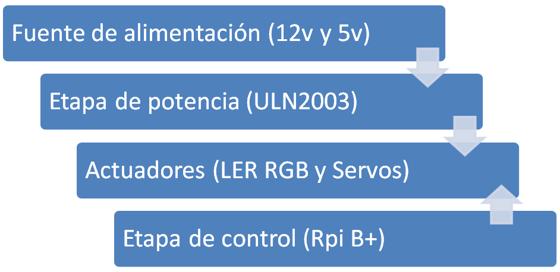
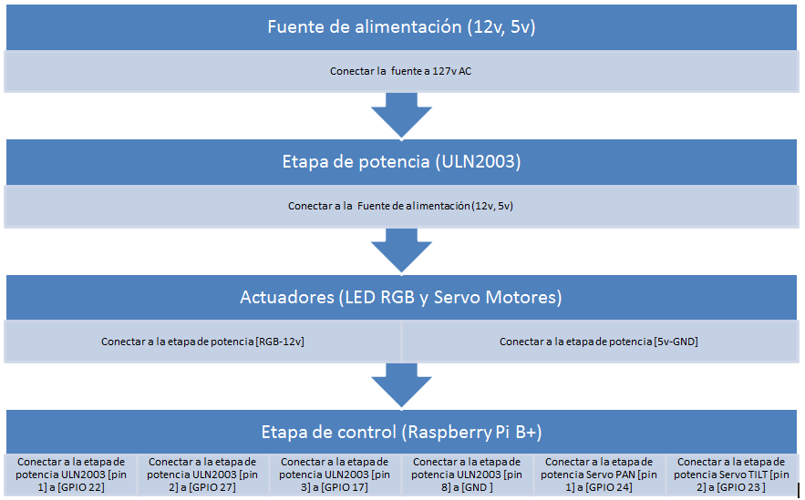
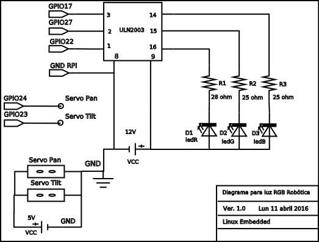

Fuente de alimentacion Etapa de potencia Actuadores Etapa de control
La luz robotica RGB controlada por Raspberry py, es un sistema de iluminacion robotica la cual puede reproducir una gama de colores de 16,7 millones, a si como modificar su posicion en dos grados de libertad. Objetivo general del sistema Esta luz robotica RGB su gama de colores y su posicion.
Diagramas de flujo de datos

Diagramas de conexion a bloques

Diagrama esquematico
